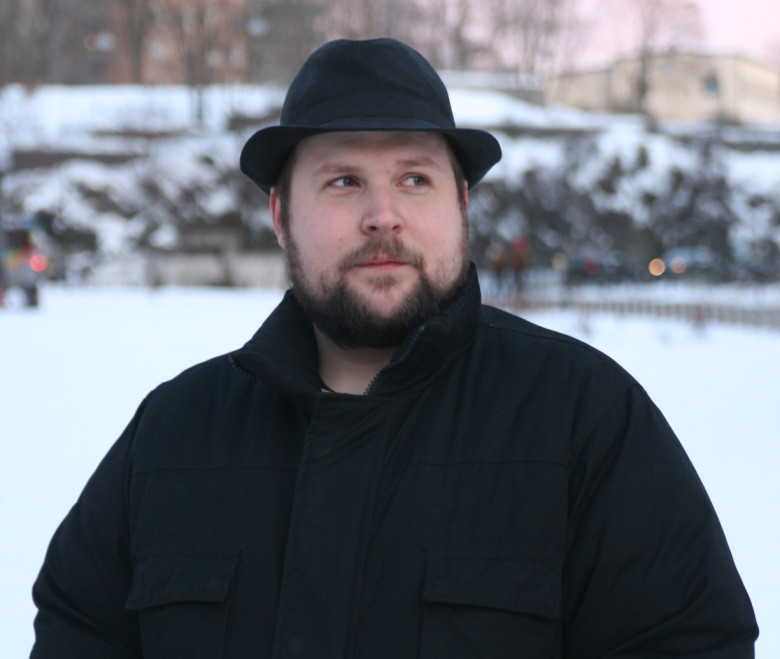

Маркус «Notch» Перссон (народився 1 червня, 1979) — шведський програміст та ігровий дизайнер. Більш відомий як «Нотч». Перссон був власником компанії відеоігор Mojang, яку він заснував разом з Карлом Манні і Якобом Порсером в кінці 2010 року. У 2009 році Перссон випустив демо версію своєї відомої гри Minecraft, яка принесла йому популярність. З моменту виходу Minecraft Перссон отримав значну популярність в індустрії відеоігор, завоювавши ряд нагород. У 2011 році Маркус залишив посаду головного дизайнера Minecraft і передав творчі повноваження Єнсу Бергенстену.